journalctl --list-boots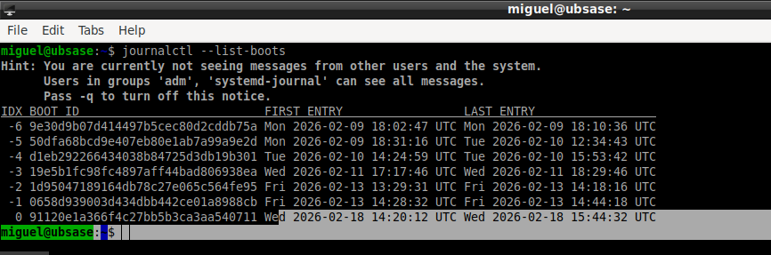
journalctl -b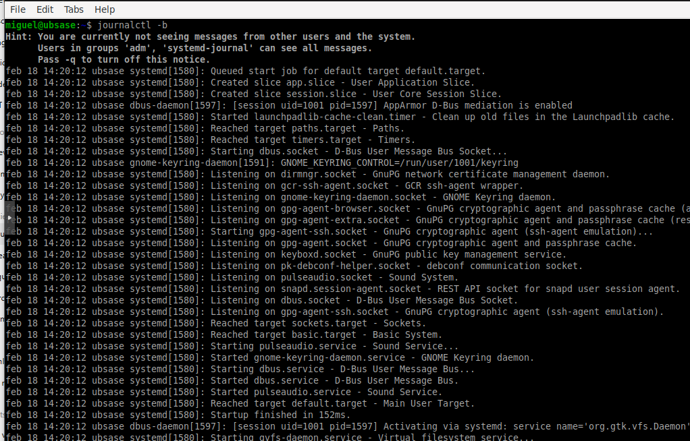
journalctl -b -1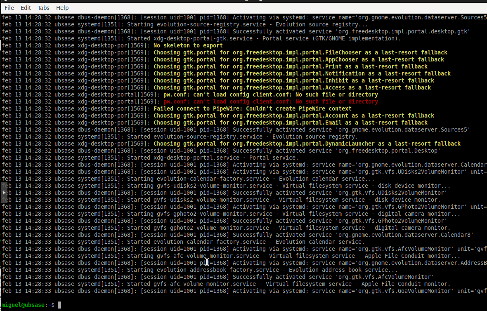
sudo journalctl -b -1 | grep -i sda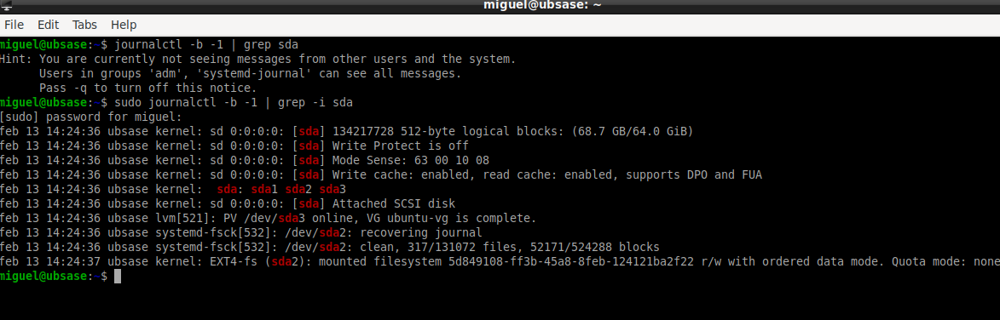
sudo journalctl -k -b -1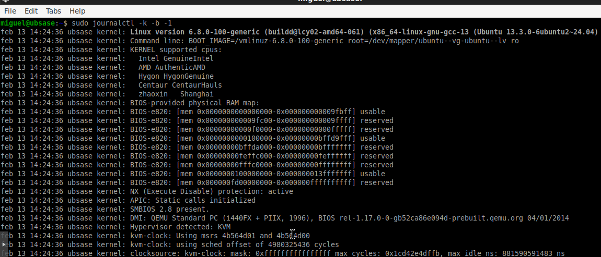
#!/bin/bash sudo journalctl _COMM=scite -n 10 sudo journalctl _COMM=firefox -n 10 sudo journalctl -u NetworkManager -n 10 sudo journalctl _COMM=sensors -n 10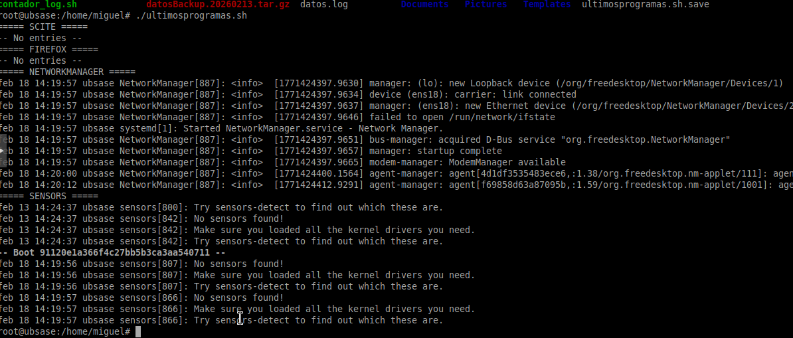
sudo journalctl _UID=0 -n 20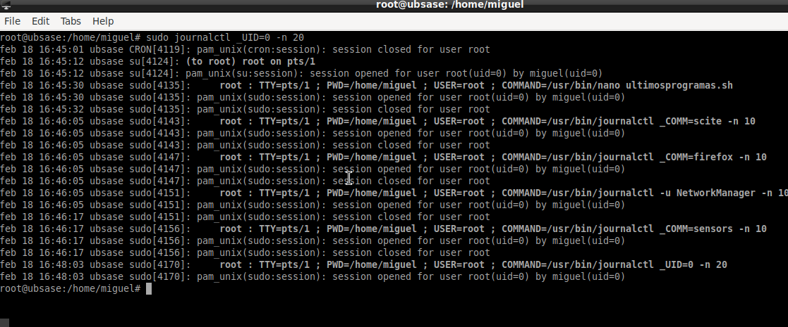
#!/bin/bash
grupo=$1
for usuario in $(getent group $grupo | cut -d: -f4 | tr ',' ' ')
do
uid=$(id -u $usuario)
sudo journalctl _UID=$uid -n 10
done
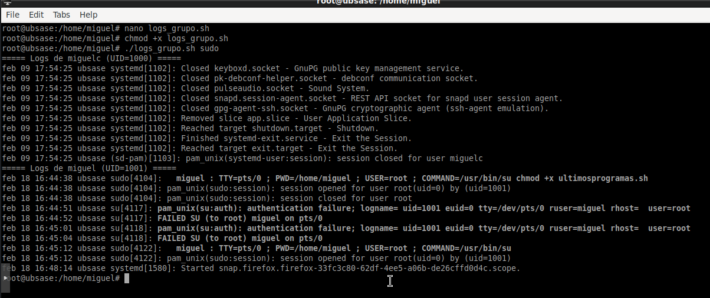
sudo journalctl -u NetworkManager --since "36 hours ago" --no-pager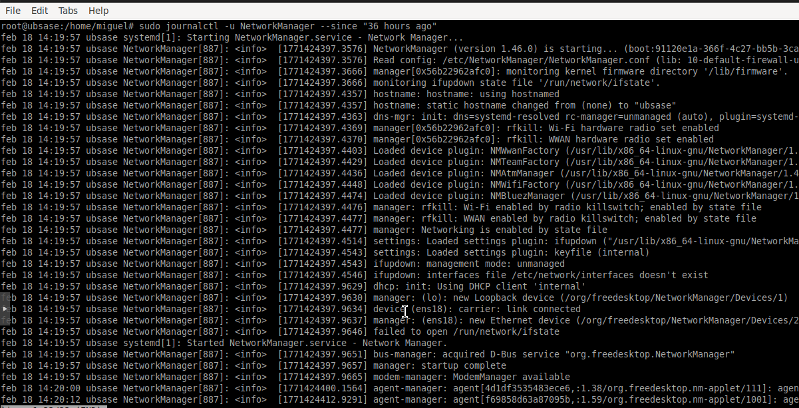
sudo journalctl -u NetworkManager --since "7 days ago" --no-pager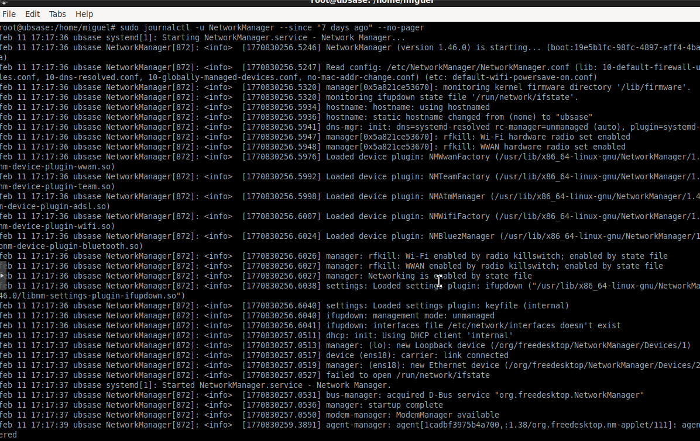
sudo journalctl _UID=$(id -u miguelc) --since "yesterday" --until "today" --no-pager
El mensaje -- No entries -- indica que no hubo eventos registrados para ese usuario en el rango temporal indicado.
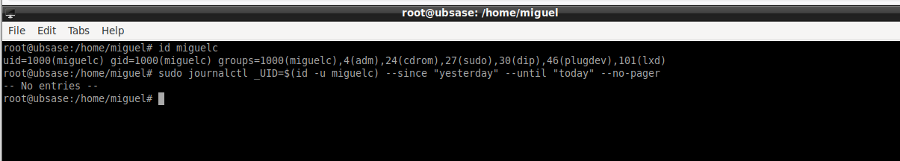sudo apt install gnome-logs gnome-logs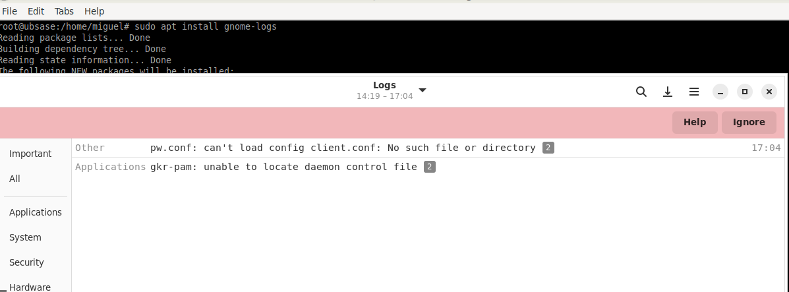
Se reinicia el servicio NetworkManager para generar actividad:
sudo systemctl restart NetworkManager
Posteriormente se abre GNOME Logs, se filtra por "NetworkManager" y se visualizan los eventos generados.
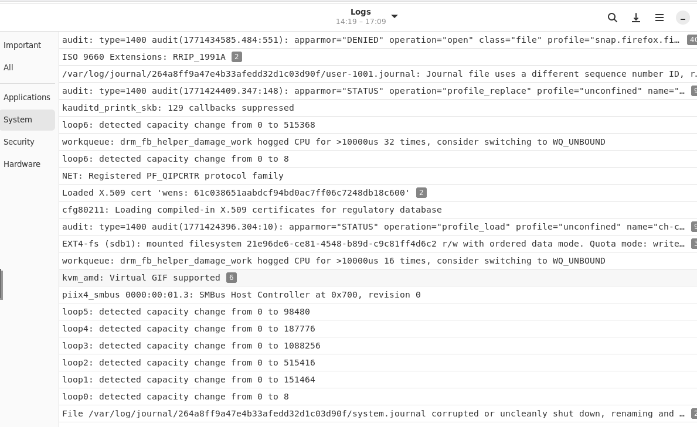sudo apt install gnome-logs
gnome-logs
La herramienta ofrece una alternativa grafica a journalctl, facilitando la interpretacion de eventos sin necesidad de trabajar exclusivamente en terminal.
Se ha realizado un analisis avanzado del journal del sistema GNU/Linux, aplicando filtros por arranque, kernel, dispositivo, usuario, grupo, servicio y rango temporal. Ademas, se ha incorporado el uso de una herramienta grafica para visualizacion estructurada de registros.